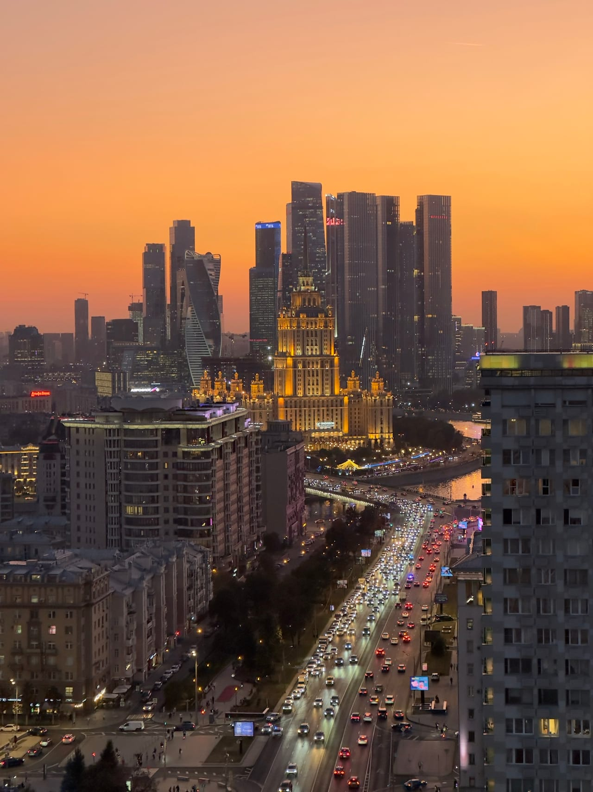

Статьи
Где смотреть закат в Москве: лучшие точки на высоте
Собрали крыши, с которых солнце садится прямо в панораму города, и честно объяснили, чем такой вечер отличается от набережной или смотровой за стеклом.
Чем закат с крыши отличается от набережной
Спросите, где посмотреть закат в Москве, — и получите знакомый список: набережные, мосты, парки и пара платных смотровых. Всё это работает, но у каждого варианта есть цена. На популярных смотровых — очередь на вход и стекло, в котором вечером отражается весь зал: половина кадров уходит на борьбу с бликами. На набережных открытого горизонта почти нет: солнце прячется за дома, и вы видите не сам закат, а только его отсвет на небе.
Крыша снимает обе проблемы: вы под открытым небом, без очередей и без стекла между вами и городом. Видно именно тот момент, ради которого всё затевалось, — как солнце касается горизонта, а город переключается с дневного света на вечернюю подсветку. Поэтому закат на крыше — самый частый повод, с которым к нам приходят.
Честная оговорка: закат зависит от погоды, и гарантировать его не может никто. В плотную облачность неба в огне не будет — зато останутся река, движение улиц и огни, которые с высоты хороши в любой вечер. Если принципиален именно ясный закат, выбирайте дату по прогнозу и записывайтесь ближе к ней.
Три точки, которые мы советуем для заката
В каталоге у нас 10 крыш у восьми станций метро — от Таганской до Шелепихи. Когда просят назвать лучшие места для заката в Москве из этого списка, мы отвечаем одинаково: одна крыша с узнаваемым силуэтом в закатной стороне неба и две с панорамами Москва-Сити.
Марксистская: силуэт Котельнической в закатном небе
Главный закатный ракурс каталога — крыша у метро Марксистская. Отсюда сталинская высотка на Котельнической набережной стоит в закатной стороне неба: вечером её шпиль превращается в графичный силуэт на оранжевом фоне, а позже включается подсветка. Если хочется открыточного кадра «высотка на фоне заката» — это сюда.
Фили, 60 этажей: Москва-Сити сверху
Самая высокая точка подборки — крыша на 60 этаже у метро Фили. Отсюда вы смотрите на башни Москва-Сити сверху — редкий ракурс: обычно деловой центр видят с земли или издалека на горизонте. На закате стеклянные фасады ловят низкое солнце, а после город раскатывается огнями до самого края панорамы.
Шелепиха, 9 этажей: из первого ряда у башен
Крыша у метро Шелепиха — всего 9 этажей, но дело не в высоте: площадка находится рядом с башнями Сити. Небоскрёбы здесь не на горизонте, а прямо над вами. Пока небо гаснет, башни одна за другой включают подсветку — и вы смотрите на это не издалека, а из первого ряда.
Выбор между этими точками — вопрос вкуса: нужен ли в кадре узнаваемый силуэт или современный стеклянный город. Если сомневаетесь, откройте фотографии в карточках крыш: все снимки сделаны на самих локациях, и по ним видно, как каждая точка выглядит именно вечером.
Как подгадать запись под золотой час
Самое ценное окно вечера короткое: золотой час перед заходом солнца, сам закат и ещё около получаса, пока город зажигает огни. Чтобы не промахнуться:
- проверьте время захода солнца на вашу дату: летом в Москве солнце садится поздно вечером, зимой — уже во второй половине дня;
- записывайтесь так, чтобы подняться примерно за час до захода: успеете освоиться на площадке и застанете мягкий свет, а не только сумерки;
- закладывайте запас: базовая прогулка длится 1 час, и если начать слишком рано, закат придётся на самый конец;
- если площадка свободна, прогулку можно продлить ещё на час — так вы заберёте и закат, и ночной город.
Сам вечер устроен просто: вы поднимаетесь с сопровождающим, слушаете короткий инструктаж и дальше распоряжаетесь временем по своему вкусу — снимаете, разговариваете или просто смотрите, как меняется свет. Планировать тоже легко: заранее вы знаете только станцию метро, а точное место встречи сообщаем после подтверждения записи, когда время согласовано.
Бесплатные альтернативы — и когда их достаточно
Ради честности: смотреть закат в Москве можно и бесплатно. Воробьёвы горы, парки на высоких берегах, набережные и мосты в центре дают красивый вечерний свет и ни к чему не обязывают — для спонтанной прогулки этого достаточно. Крыша нужна, когда хочется большего: открытый горизонт, город на все стороны и вечер без толпы вокруг.
Сколько стоит и как записаться
Прогулка по крыше стоит от 2000 ₽ за человека и длится 1 час; продление, если площадка свободна, — 500 ₽ с человека за час. Актуальные варианты по конкретным крышам показывает Telegram-бот. Записаться можно двумя способами: оставить заявку в форме на главной или написать боту — подтвердим свободное время и пришлём детали встречи.
Формат одинаково хорошо работает для свидания, встречи с друзьями и спокойного вечера после рабочего дня. С собой стоит взять тёплый слой одежды и удобную нескользящую обувь: после захода солнца на высоте заметно свежее. Снимать можно на телефон или прийти со своим фотографом — ограничений нет. А если хотите подарить такой вечер, подарочных сертификатов у нас нет — вместо этого согласуйте прогулку-сюрприз через Telegram-бот: вы выбираете крышу и дату, а человеку остаётся только подняться.
FAQ
Частые вопросы про закат
Во сколько приходить, чтобы застать закат?
Планируйте подъём примерно за час до захода солнца: так вы застанете золотой свет, сам закат и первые огни города. Время захода на нужную дату легко проверить в любом прогнозе погоды — летом в Москве это поздний вечер, зимой — вторая половина дня.
Что, если в день прогулки будет пасмурно?
Погоду мы не гарантируем: яркий закат — всегда немного везение. Но город с высоты интересен и в облачный вечер — река, улицы, вечерняя подсветка. Если важен именно ясный закат, выбирайте дату по прогнозу ближе к дню прогулки.
Можно ли снимать закат с фотографом?
Да. Приходите со своим фотографом или снимайте на телефон — на площадке в этом нет ограничений. Отдельный фотограф в прогулку не входит.
Над городом